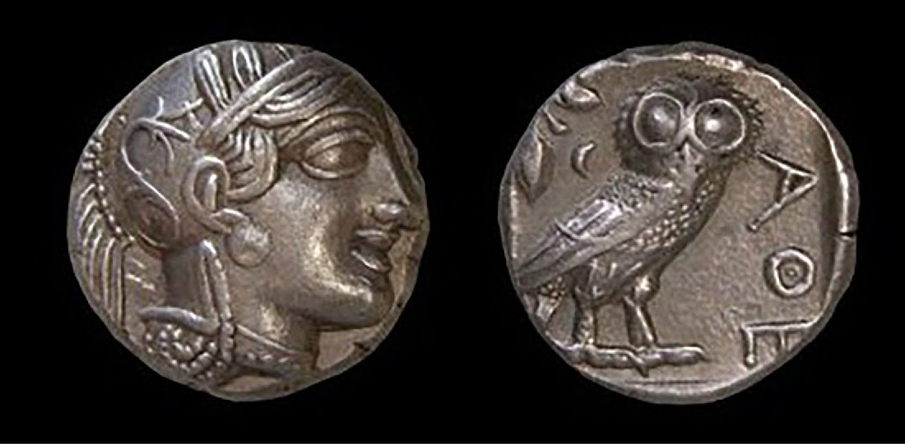

Finance · Money
아테네 — 부엉이는 어떻게 돈 위에 앉았을까
은화 한 닢에서 만나는 시장과 도시의 얼굴

은화 한 닢에 부엉이가 서 있다. 큰 눈은 정면을 보는 듯하고 몸은 옆으로 놓였다. 반대쪽에는 투구를 쓴 여신의 얼굴이 있다. 오늘의 동전에 국적을 알려 주는 문양이 있듯, 이 작은 은 조각에도 어느 도시의 세계인지 알아볼 수 있는 표지가 새겨졌다.
함께 실은 것은 기원전 5세기 아테네 은화의 실제 사진이다. 아테나와 그 여신의 상징인 부엉이가 양면에 등장한다. 멋진 조각을 감상하는 데서 시작해, 왜 사람들은 귀한 금속에 반복되는 그림을 찍어 돈으로 사용했는지 살펴보자.
1. 금속을 주고받던 거래에 표지가 생기다
고대의 거래에서는 귀금속의 무게와 가치를 확인하는 일이 중요했다. 주조된 돈은 일정한 금속 조각에 알아볼 수 있는 표지를 남기는 방법이었다. 교재는 그리스 도시들이 소아시아 서부 리디아의 주조 관행을 받아들인 흐름 속에서 아테네의 은화를 설명한다.
다만 돈이 없던 세계가 어느 날 동전 하나로 완전히 바뀌었다고 상상할 필요는 없다. 물건의 교환과 여러 지급 방식은 함께 존재할 수 있었다. 동전은 그 가운데 반복되는 거래에서 금속의 가치와 표지를 연결하는 새로운 도구로 자리 잡았다.
2. 도시의 여신을 손에 쥐다
은화의 한쪽에 있는 아테나는 아테네와 특별한 관계를 가진 여신이었다. 높은 언덕의 신전에서 만나던 도시의 상징이 작은 물건 위에도 놓인 것이다. 사람은 돈을 주고받으며 신전까지 가지 않고도 여신의 모습을 손에 쥘 수 있었다.
오늘날 우리는 지폐와 동전의 초상을 너무 자주 보아 거의 의식하지 않기도 한다. 그러나 누구의 얼굴과 어떤 상징을 넣을지는 선택의 결과다. 고대 아테네의 돈도 순수한 교환 도구인 동시에 도시가 자기 모습을 드러내는 작은 화면이었다.
3. 왜 부엉이였을까
교재는 부엉이를 아테나와 연결되는 지혜의 상징으로 소개한다. 여신의 얼굴과 부엉이는 서로 떨어진 두 그림이 아니라 같은 도시의 신앙과 정체성을 잇는 표현이었다. 글을 길게 읽지 않아도 문양을 알아보는 길이 있었다.
사진에서는 부엉이의 큰 눈과 날개, 몸의 윤곽을 천천히 살펴보아도 좋다. 작은 금속 면 안에서 특징을 알아보게 만드는 표현이 필요했다. 이 그림만으로 당시 사람들이 모두 같은 신앙심을 품었다고 말할 수는 없지만, 어떤 상징이 공적인 물건 위에 선택되었는지는 볼 수 있다.
4. 광장이 시장이 되던 풍경
그리스 도시의 아고라는 사람들이 모이는 자리이면서 물건을 사고파는 장소였다. 교재는 주화의 사용이 거래를 편리하게 하는 흐름과 시장의 성장을 함께 설명한다. 농부와 장인, 상인은 자신이 만든 것을 다른 사람에게 넘기고 필요한 것을 구했다.
각자가 가진 물건이 상대의 필요와 정확히 맞아야만 하는 거래보다 교환의 중간 수단을 쓰는 거래가 편리할 때가 있다. 하지만 동전이 생겼다고 가격을 둘러싼 흥정과 질의 확인이 사라지는 것은 아니다. 새로운 도구는 거래의 일부를 바꾸면서 기존의 판단과 함께 움직였다.
5. 문양이 있다고 질문이 끝나는 것은 아니다
익숙한 도안은 무엇을 받았는지 판단하는 단서가 된다. 그렇다고 새겨진 그림만으로 금속의 양과 상태에 관한 모든 문제가 해결되는 것은 아니다. 돈의 표지와 그것을 사람들이 어떻게 받아들였는지는 함께 살펴야 한다.
이 은화의 의미도 부엉이가 예뻐서 모두가 믿었다는 식으로 설명할 수는 없다. 도시와 시장, 귀금속의 가치와 거래의 관행이 배경에 있었다. 돈은 물질 한 조각이면서 그 조각을 어떤 관계 안에서 주고받는지에 관한 약속이기도 했다.
6. 손바닥의 은화와 언덕 위 신전
같은 아테나가 동전에도 나타나고 파르테논 같은 큰 신전의 중심에도 놓였다. 규모는 다르지만 도시의 자원과 기술, 상징이 두 물건을 모두 만들었다. 아테네를 건축으로 볼 때와 돈으로 볼 때 서로 다른 크기의 풍경이 열린다.
도시의 번영이 모두에게 같은 생활을 뜻했던 것도 아니다. 교재가 설명하듯 아테네의 정치적 참여에는 여성과 노예, 거주 외국인을 배제하는 경계가 있었다. 훌륭한 조각과 시장의 성장을 감상하면서도 그 물건을 사용한 사회의 차이를 함께 생각할 수 있다.
7. 사진 속의 두 면을 번갈아 보기
함께 실은 사진은 한 은화의 양면을 나란히 보여 준다. 두 도시의 돈이나 시대가 다른 두 물건을 비교한 그림이 아니다. 아테나와 부엉이가 같은 물건의 앞뒤에 놓였다는 점을 알면 작은 동전의 구성도 더 또렷하게 보인다.
현재 사진이 기원전 5세기의 시장을 직접 보여 주는 것은 아니다. 유물의 표면에서 출발해 교재의 거래와 도시 설명을 함께 읽는 것이다. 은화 한 닢을 얼마의 현대 화폐와 같다고 단순히 환산하지 않아도 그 시대 사람들의 경제와 상징을 살펴볼 수 있다.
8. 돈을 보면 도시의 얼굴도 보인다
아테네의 부엉이는 금융의 역사가 숫자와 계산만으로 이루어지지 않았음을 보여 준다. 거래를 위한 금속에 여신과 동물을 새기고, 그것을 사람들이 알아보는 물건으로 만드는 과정에는 기술과 신앙, 도시의 정체성이 함께 있었다.
다음에 오래된 동전을 만나면 값이 얼마였는지와 함께 무엇이 그려졌는지도 보아 두자. 손바닥의 작은 면에는 어느 사회가 자신을 어떻게 표현했는지가 남는다. 부엉이 한 마리는 아테네의 시장과 신전을 이어 주는 뜻밖의 역사 안내자가 된다.
이야기의 바탕이 된 자료
- OpenStax World History — 그리스의 도시와 아테네 주화 ↗확인일 2026-10-31
리디아 주조 관행의 수용·아고라와 시장 · 기원전 5세기 은화의 아테나와 부엉이·당시 정치 참여의 경계